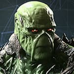
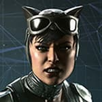
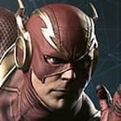
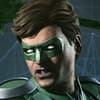
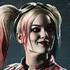
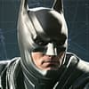
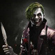
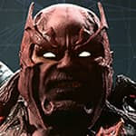
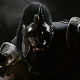
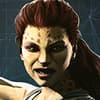
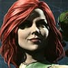
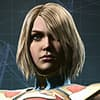
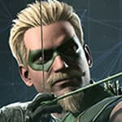
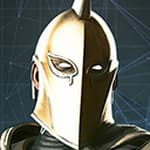
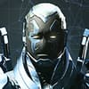
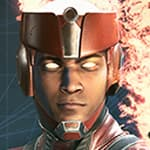
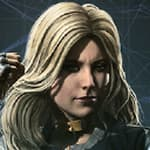
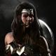
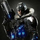
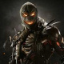
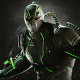
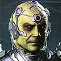
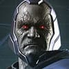
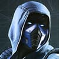
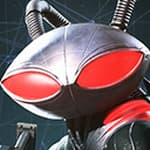
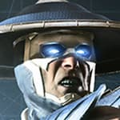
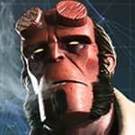
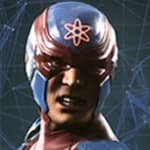
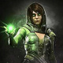
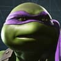
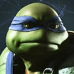
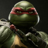
| U = Up/Jump D = Down/Crouch/Low Block F = Forward/Toward B = Back/Away/Block |
Dash: F, F Back Dash: B, B Uppercut: (D+Δ) Sweep: (D+✕) Pause/Movelist: START |
| Universal: L = Light Attack M = Medium Attack H = Heavy Attack CP = *Character Power TH = **Throw SI = Stage Interaction FS = Flip Stance MB = Meter Burn SM = Super Move |
PlayStation 4: L = ▢ M = Δ H = ✕ CP = O TH = L1/(▢+✕) SI = R1/(▢+Δ) FS = L2 MB = R2 SM = (L2+R2)/(Δ+✕+R2) |
Info:
First Appearance: (Orin/Arthur Curry) More Fun Comics #73 (1941)
Alignment: Hero
Bio:
The Atlantean ruler has isolated his kingdom from the surface world's affairs after a punishing defeat during the fall of Superman's Regime. However his determination to keep Atlantis' independence may cost him, as new threats arise, can Aquaman swallow
his pride to protect his people?
Special Moves:
* Trident Rush: D, F, ▢
Retreat: B, B
Advance: F, F
* Trident Scoop: D, B, ▢
Trident Toss: B, F, Δ
* Tentacle Strike: D, B, Δ
* Water Shield: D, D, ✕ (Hold ✕ to Extend)
Cancel: F, F/B, B
Character Power:
Water of Life: O
Aquaman recovers from hit reactions quicker and allows him to slip out of combos of attacks.
Water of Life can be activated during a hit reaction.
Super Move:
The Beast Below: (L2+R2)
Aquaman stabs his opponent with his trident, throws them over his head, and floods the arena. He lifts them above a whirlpool as lightning strikes his trident, then lands a few slashes. A massive Mosasaur bites his opponent and dives, with Aquaman following.
The creature releases them, and Aquaman impales his foe once more.
Info:
First Appearance: Green Lantern Vol. 4 #25 (2007)
Alignment: Villain
Bio:
Red Lantern Atrocitus seeks revenge against all members of the Sinestro Corps for their murderous oppression of his homeworld. His hate blazes a path across the galaxy, leading him to Earth. Sensing an opportunity on the post-Regime planet, Atrocitus focuses
on bolstering the Red Lantern's ranks by stoking the flames of rage.
Special Moves:
* Rage Charge: B, F, ▢ (Also in Air)
* Blood-Nado: D, B, ▢
* Napalm Vomit: B, F, Δ
* Napalm Vomit - Up: D, F, Δ
* Life Drain: D, B, ✕ (D, D, R2 to Meter Burn once Atrocitus
is pulsating)
Character Power:
Power of Rage: O
Dex-Starr: O
Atrocitus summons his cat Dex-Starr to assist him during the fight.
Blood Ball: O (Also in Air)
Blood Wall: (F+O) (Also in Air)
Hate Pounce: (D+O) (Also in Air)
Combo Attacks: (With Dex-Starr active)
Crimson Red: (F+▢), Δ, ✕, ✕
Burn All: Δ, Δ, ✕
Massacre: (B+Δ), ✕, ✕
Super Move:
The Butcher: (L2+R2)
Atrocitus recites the Red Lantern Oath, impales his opponent with a blade, and punches them into a rock. He summons the Butcher, which charges, shattering the rock and knocking them down. Atrocitus finishes by spewing fire onto his foe.
Info:
First Appearance: Batman: Vengeance of Bane #1 (1993)
Alignment: Villain
Bio:
After Superman's defeat, Bane was betrayed by the Regime and relentlessly pursued by Batman. Having already spent most of his life in prison, he is determined to take revenge against his former Regime masters and turn Gotham into a city where his rule
is law.
Special Moves:
* Raging Charge: B, F, ▢
Ring Slam: D, B, ▢ (Anti-Air)
* Mercenary's Elbow: B, F, Δ
* Venom Uppercut: D, B, Δ
* Bane Bomb: D, B, F, ✕ (Close)
Character Power:
Venom Boost: O
Venom Boost has 3 levels, each level makes Bane more powerful.
When the buff wears off, Bane will become weakened.
Super Move:
Vengeance of Bane: (L2+R2)
Bane stomps, sending his opponent flying. He leaps after them, landing a punch, headbutt, and knee to the face before finishing with an earth-shattering DDT.
Info:
First Appearance: (Bruce Wayne) Detective Comics #27 (1939)
Alignment: Hero
Bio:
Even after he's been exposed to the world as Batman, Bruce Wayne keeps his vow to avenge his parents' death by fighting for justice. He refuses to execute his enemies, believing that once he crosses that line, he's no better than the cowards he battles.
Special Moves:
* Straight Grapple: D, F, ▢
* Sky Grapple: D, B, ▢
* Batarang: B, F, Δ
* Batarang - Up: D, B, Δ
* Scatter Bombs: D, B, Δ (In Air)
Drop Kick: ▢ (In Air, After Meter Burn)
Elbow Drop: ✕ (In Air, After Meter Burn)
* Slide Kick: B, F, ✕
Cape Counter: D, B, ✕
Double Jump: U, UB/UB, UB (In Air)
Glide: U, UF/UF, UF (In Air)
Drop Kick: ▢ (In Air)
Elbow Drop: ✕ (In Air)
Character Power:
Summon Bats: O
Batman summons Mechanical Bats that hover around his body.
Release Bats: O
Pressing O will unleash Mechanical Bats at the opponent as a projectile.
Mechanical Bats can be released while Batman is in the air.
Bat Swarm: (D+O)
Must have full Character Power to perform Bat Swarm.
(Hold O) to extend Bat Swarm.
Super Move:
Bat of Gotham: (L2+R2)
Batman tackles his opponent, deploying a gadget that lifts them into the Batwing's path. The Batwing pulls up, turns, and fires a machine gun before launching a missile, sending the opponent crashing to the ground.
Info:
First Appearance: The Marvel Family #1 (1945)
Alignment: Villain
Bio:
After the fall of the Regime, Black Adam returned to his home defeated and humiliated. Staying hidden from Batman's watchful eye, Khandaq has become a safe haven for the Regime's remnants. There they await the day that together they can restore the Regime's
rule upon the world.
Special Moves:
* Lightning Storm: D, F, ▢
* Black Magic: D, B, ▢
* Lightning Strike: D, F, Δ
Lightning Bomb: D, B, Δ
Lightning Bomb - Close: D, B, Δ, B
Lightning Bomb - Far: D, B, Δ, F
* Lightning Cage: D, B, ✕
* Boot Stomp - Close: D, B, ✕ (In Air)
* Boot Stomp - Far: D, F, ✕ (In Air)
Character Power:
Orbs of Seth: O
Black Adam summons three orbs of lightning that revolve around his body.
Super Move:
SHAZAM!!!: (L2+R2)
Black Adam throws his opponent into Egypt, crashing them into a pyramid. He tackles them through it, yells 'SHAZAM!' and dodges as lightning strikes, obliterating the pyramid.
Info:
First Appearance: FLASH COMICS #86 (1947)
Alignment: Hero
Bio:
Dinah Lance nearly sacrificed everything in her fight against the Regime but was forced to flee, before the fight was done. Now, with Batman restoring order, Black Canary has returned home to set things right, vowing to never again silence her canary's
cry.
Special Moves:
* High Parry: D, F, ▢
Low Parry: D, B, ▢
* Soaring Knee: B, F, Δ
* Canary Drop: D, B, Δ (Also in Air)
* Canary Drop - Close: D, B, Δ, B (Also in Air)
* Front Handspring: D, F, ✕
Flying Scissor Kick: (Hold ✕)
Crazy Legs: (D+Hold ✕)
Thrust Kick: (U+Hold ✕)
* Back Handspring: D, B, ✕
Flying Scissor Kick: (Hold ✕)
Crazy Legs: (D+Hold ✕)
Thrust Kick: (U+Hold ✕)
Character Power:
Canary Cry: O
Canary Cry has 3 levels, each level makes the attack more powerful.
Holding O will charge Black Canary's scream meter faster.
Canary Cry Level 2: O
Canary Cry Level 3: O
Charge: (Hold O)
Cancel: D, D
Super Move:
Sonic Scream: (L2+R2)
Black Canary leaps, unleashing her Canary Cry to bring her opponent to their knees. She lands, bicycle kicks them into the air, then slams them down with another Canary Cry before delivering a gut punch.
Info:
First Appearance: Blue Beetle #1 (1964)
Alignment: Hero
Bio:
Jaime Reyes sought Batman's help in learning to use the Scarab, an alien weapon of mass destruction bonded to his spine. Although the Scarab could pose a deadly threat to the entire planet, kindhearted Jaime is determined to protect people, wary of the
corruptive influence of great power he witnessed under the Regime.
Special Moves:
* Blade Barrage: D, F, ▢
* Blade Stab: D, B, ▢
* Energy Cannon: B, F, Δ (Also in Air)
Flying Scarab: D, B, Δ (In Air)
Beetle Retreat: UB (In Air)
Beetle Rise: U (In Air)
Beetle Advance: UF (In Air)
Beetle Dash: F, F (In Air)
Beetle Drop: D (In Air)
Shield Slam: B, F, ✕
Character Power:
Power Blades: O
Gains Power Blades for all Punching attacks.
Disables Energy Cannon and Crawling Burst when Power Blades are active.
World Rippers: Δ, ▢, (▢+✕)
* Mandible Strike: B, F, ✕
Super Move:
Shape Shifter: (L2+R2)
Blue Beetle sprouts two appendages that thrust at his opponent. His hands transform into maces, then energy cannons, combining for a powerful blast that delivers the finishing blow.
Info:
First Appearance: ACTION COMICS #242 (1958)
Alignment: Villain
Bio:
Brainiac is a megalomaniacal genius who roams the universe, collecting knowledge to increase his intellectual and scientific prowess. Obsessed with establishing his superiority, Brainiac captured Krypton's greatest cities, then eradicated what remained...
Or so he thought. Tales of the "Last Son of Krypton" have reached far into the stars. Now, the Collector of Worlds comes to Earth to finish his accumulation of Krypton - and discovers a new world worthy of his collection.
Special Moves:
Tendril Swing: D, B, ▢ (In Air)
Tendril Swing - Close: D, B, ▢, B (In Air)
Tendril Swing - Far: D, B, ▢, F (In Air)
* Dox Drill: D, F, Δ
* Tendril Thrash: D, B, Δ (Anti-Air)
* Pneumenoid Dive: D, B, Δ (In Air)
* Cybernetic Charge: B, F, ✕
Character Power:
Beta Strike: O
Delay: (Hold O)
Brainiac Commands a Beta to fly towards the opponent.
Beta Bomb: (D+O)
Delay: (Hold O)
Brainiac commands a Beta to drop an Ion Bomb on the opponent.
Super Move:
Skull Ship: (L2+R2)
Brainiac sprouts four mechanical appendages, one grabbing and throwing the opponent to the ground. He sends four robots to fire harpoons, then his ship arrives, firing a laser that destroys both the enemy and his own robots with its force.
Info:
First Appearance: Showcase #8 (1957)
Alignment: Villain
Bio:
Sworn to ending all crime, the Regime hunted down and brutally executed every member of the Rogues, including Captain Cold's sister. Using his skills as a thief and his iconic Cold Gun, Cold now seeks his vengeance. He'll gladly use the Society to achieve
it.
Special Moves:
* Cold Blast: B, F, ▢
* Death-Cicle: D, F, Δ
* Death-Cicle - Close: D, F, Δ, B
* Death-Cicle - Far: D, F, Δ, F
* Death-Cicle - Very Far: D, F, Δ, U
* The Wall: D, B, Δ
* Frost Field: D, F, ✕
* Big Freeze: D, B, ✕
Character Power:
Cyclotron Charge: (Hold O)
Cancel: F, F/B, B
There are 3 levels to Cyclotron Charge.
Holding O will charge the Cold Gun allowing different special moves to be performed.
Frosted Tips: (B+O)
Frosted Tips requires 1 bar of Cyclotron Charge.
Captain Cold coats himself with icy spikes that will damage the opponent when connecting normal and special moves.
Glacier Grenade: (F+O)
Glacier Grenade requires 2 bars of Cyclotron Charge.
The opponent will take damage over time and begin to freeze while standing in frozen area created by the Glacier Grenade.
Cryogenic Blast: (D+O)
Cryogenic Blast requires all 3 bars of Cyclotron Charge.
Super Move:
Absolute Zero: (L2+R2)
Captain Cold shoots a blast, freezing the opponent and transporting them to a cold field. He rides an icy trail, hitting them with blasts before jumping to the top, forming a giant icicle to crush them.
Info:
First Appearance: (Selina Kyle) Batman #1 (1940)
Alignment: Villain
Bio:
Consistently walking the line between hero and villain, Selina Kyle's pilfering past as Catwoman prevents Batman from ever placing his full trust in her. As the ashes of the Regime give rise to the sinister Society, the Caped Crusader must once again speculate
where this thieving feline's loyalties lie.
Special Moves:
Cat's Tail: D, F, ▢
Cat's Tail - Up: D, B, ▢
* Cat Dash: B, F, Δ
Feline Evade - High: D, B, Δ
Feline Evade - Low: D, B, Δ, U
* Rising Claws: D, F, ✕
Cat Stance: D, D, ✕
Cat-Wheel: ▢
Up Whip: Δ
Pounce: ✕
Cat-cel Cat Stance: F, F/B, B/U
Character Power:
* Cat-Lateral Damage: O
Each time Catwoman lands an attack she has a chance to have 1 Scratch added to her Scratch meter.
Pressing O will perform a damaging combo, with each Scratch adding additional damage, up to a maximum of 5 hits.
To Meter Burn, you must press R2 in the middle of Cat-Lateral Damage.
Cat-Lateral Damage can only be Meter Burned when 4 or 5 scratches are available.
Super Move:
Bad Kitty: (L2+R2)
Bad Kitty - Close: (L2+R2), B
Bad Kitty - Far: (L2+R2), F
Catwoman leaps at her opponent, kicking them in the face before riding a motorcycle toward them. She uses her whip to drag them along the ground, then returns, pulling the motorcycle upward and jumping off as it crashes into her opponent, exploding
violently.
Info:
First Appearance: Wonder Woman #6 (October 1943)
Alignment: Villain
Bio:
When archaeologist Barbara Ann Minerva betrayed Wonder Woman to claim the powers of a god, she was unaware that she would be cursed to live a life transformed as the Cheetah. She now uses her primal powers to take revenge against Wonder Woman, drawing
her out of hiding in hopes of bringing about her doom.
Special Moves:
* Savage Ambush: D, B, ▢ (opponent must be ducking)
* Deadly Hook: D, B, F, ▢ (Close)
* Primal Rage: D, B, Δ
* Predator Pounce: D, B, Δ (In Air)
* Blood Lunge: B, F, ✕
Delay: (Hold ✕)
Cat-cel: F, F/B, B
* Blood Lunge - Close: B, F, ✕, B
Delay: (Hold ✕)
Cat-cel: F, F/B, B
* Blood Lunge - Far: B, F, ✕, F
Delay: (Hold ✕)
Cat-cel: F, F/B, B
Character Power:
Claws of Death: O
Grants Cheetah a damage buff on all claw attacks.
Super Move:
Queen of the Jungle: (L2+R2)
Cheetah charges, throws her opponent into the air, and lands three rapid slashes. She follows with more strikes, then jumps onto their back, breaking their spine and slamming them into the ground.
Info:
First Appearance: (Victor "Vic" Stone) DC Comics Presents #26 (1980)
Alignment: Hero
Bio:
Victor Stone lost more than his friends at the tragedy of Metropolis, he lost his hope. His anger tempered his loyalty for Superman, and he has remained eager to serve the Regime. With the world left unprepared for the looming threat, Cyborg may be the
only one who can combat the technological might of Brainiac.
Special Moves:
* Nova Blaster: B, F, ▢ (Also in Air)
Delay: (Hold ▢)
Cancel: F, F/B, B
* Nova Blaster - Up: D, B, ▢
Delay: (Hold ▢)
Cancel: F, F/B, B
* Nova Blaster - Down: D, B, ▢ (In Air)
Sonic Disruptor: D, F, Δ
Delay: (Hold Δ)
Cancel: F, F/B, B
Sonic Disruptor - Up: D, F, Δ, U
Delay: (Hold Δ)
Cancel: F, F/B, B
* Power Fist: D, B, Δ
Cybernetic Sweep: D, B, ✕
* Techno Tackle: B, D, F, ✕ (Close)
Target Acquired: D, D, ✕
Delay: (Hold ✕)
Cancel: F, F/B, B
Target Acquired - Close: D, D, ✕, B
Delay: (Hold ✕)
Cancel: F, F/B, B
Target Acquired - Far: D, D, ✕, F
Delay: (Hold ✕)
Cancel: F, F/B, B
Grapple - Back: D, UB
Grapple - Forward: D, UF
Character Power:
Front Air Drone: O
Cyborg uses the Power of the Mother Box to create an Air Drone.
Behind Air Drone: O, B
Cyborg uses the Power of the Mother Box to create an Air Drone.
Front Land Drone: O, F
Cyborg uses the Power of the Mother Box to create a Land Drone.
Behind Land Drone: O, D
Cyborg uses the Power of the Mother Box to create a Land Drone.
Super Move:
Apokolips: (L2+R2)
Cyborg blasts his enemy through a Boom Tube to Apokolips, where Parademons attack. He drags them back through the open Boom Tube and obliterates them with a powerful blast, destroying the Parademons.
Info:
First Appearance: Batman #59 (1950)
Alignment: Villain
Bio:
Floyd Lawton is "the" human arsenal, his aim lethal from any range. Having escaped imprisonment during the Regime, he now enters the fray as an expert assassin for hire, forced to contend with the fact that Grodd has come into possession of the
detonator to the Personal Explosive Device implanted in his head.
Special Moves:
* Wrist Cannon: B, F, ▢ (Also in Air)
Advance: (Hold F) (During Meter Burn)
Retreat: (Hold B) (During Meter Burn)
* Trick Shot: D, F, Δ
* Trick Shot - Close: D, F, Δ, B
* Trick Shot - Far: D, F, Δ, D
* Bullet Barrage: D, B, Δ
* Assassin Knee: B, F, ✕
* Deadly Assault: D, B, ✕
Character Power:
Incendiary Ammo: O
Adds damage over time for Wrist Cannon.
Explosive Ammo: (B+O)
Does additional damage over time and causes a knockdown for Wrist Cannon.
Poison Ammo: (F+O)
Drains the opponent's Super Meter for Wrist Cannon.
Super Move:
Never Miss: (L2+R2)
Deadshot unleashes a brutal assault, starting with a rifle strike to his opponent's head. He then throws the rifle, punches, and stabs with a knife. Spinning, he elbows the opponent and shoots them with a wrist-mounted cannon, followed by another stab
and shot. Catching the falling rifle, he finishes with a headshot.
Info:
First Appearance: (Kent, Inza) More Fun Comics #55 (May 1940)
Alignment: Hero
Bio:
Powerful sorcerer Kent Nelson wears the Helm of Fate and sees the fate of all mankind, for better or worse. He knows the world will end - either by Brainiac's hand, or in a war between Batman and Superman. Though the Helm compels Kent to preserve this
grim fate for the sake of Order, Kent's humanity compels him to intervene on behalf of his heroic friends - and risk the unforeseeable consequences.
Special Moves:
* Amon Ra Blast: D, F, ▢
* Displacer Orb: D, B, ▢
Meter Burn: D, B, R2
Cancel: F, F/B, B
* Breath of Life: D, F, Δ (Restores Life)
* Breath of Life - Behind: D, F, Δ, B
* Glyph of Osiris: D, B, Δ
Spell of Judgment: D, B, ✕ (Up To 3 Times)
Final Judgment: D, F, ✕
* Sharidum's Lock: D, D, ✕ (Locks close Environmental Interactions by Opponent for a short period of time.)
(Meter Burns locks all Environmental Interactions by Opponent for a short period of time.)
Character Power:
Dark Magic: O
Dark Magic augments the properties of Doctor Fate's spells.
* Apophis Blast: D, F, ▢
* Chaos Orb: D, B, ▢
Meter Burn: D, B, R2
Cancel: F, F/B, B
* Nabu's Curse: D, F, Δ (Depletes Life)
* Nabu's Curse - Behind: D, F, Δ, B
* Glyph of Anubis: D, B, Δ
Spell of Punishment: D, B, ✕ (Up To 3 Times)
Final Punishment: D, F, ✕
Super Move:
The Amulet of Anubis: (L2+R2)
Doctor Fate pulls his opponent into a portal on his chest, transporting them to a room with three other Fates. They slam the opponent into a wall, strike with orbs, and push them out with his amulet, ejecting them back through the portal.
Info:
First Appearance: FIRESTORM, THE NUCLEAR MAN #1 (1978)
Alignment: Hero
Bio:
Two minds sharing one super-powered body, Jason Rusch and Martin Stein are only beginning to master their abilities as Firestorm. However reconciling Jason's brash personality with Martin's more empirical approach is no small task. While these two don't
agree on much, one thing they never argue about is helping Batman rebuild a safer world.
Special Moves:
* Fusion Blast: B, F, ▢
Energy Shield: D, B, ▢
Heat Flux: D, B, Δ (Charges Eternal Flame Faster)
Extend: (Hold Δ)
Cancel: B, B/F, F
* Molten Trap: B, D, Δ
* Molten Trap - Close: B, D, Δ, B
* Molten Trap - Far: B, D, Δ, F
Fusion Charge: B, F, ✕ (Also in Air)
* Atomic Burst: D, B, ✕
Dash Forward: F, F (In Air)
Dash Away: B, B (In Air)
Character Power:
Eternal Flame: O
Eternal Flame has 3 levels, each level makes Firestorm more powerful and regenerate health faster.
Super Move:
Molecular Mayhem: (L2+R2)
Firestorm dashes past his opponent, throwing two fireballs. He goes underground, emerges beneath them, and launches them into the air. He then forms two large fireballs and slams them down on his opponent.
Info:
First Appearance: (Barry Allen) Showcase #4 (1956)
Alignment: Hero
Bio:
Once known as the fastest man alive, Barry Allen has hung up his boots in public shame after defecting from the Regime. However, as a new enemy threatens the innocent, the Flash returns to action, determined to redeem himself.
Special Moves:
Fists of Fury: B, F, ▢
* Lightning Kick: D, F, ▢
Delay: (Hold ▢)
Cancel: F, F/B, B
* Quantum Tunneling: D, B, ▢
* Lightning Punches: B, F, Δ
On Your Mark: D, D, Δ
Running Man: F
Lighting Charge: (F+▢)
Sonic Pound: (F+Δ)
Quick Slide: (F+✕)
Cancel: B, B
* Sonic Pound: D, F, ✕
* Sonic Pound - Close: D, F, ✕, B
* Sonic Pound - Far: D, F, ✕, F
* Sonic Lift: D, B, ✕
Character Power:
Speed Zone: O
The Flash enters the Speed Zone causing The Flash to move faster than his opponent.
Super Move:
Time Changer: (L2+R2)
Flash hits his opponent, sending them spinning. He then travels back in time to slam them into the Sphinx, again to toss them into an angry Tyrannosaurus Rex, and finally travels forward to smash them into themselves.
Info:
First Appearance: The Flash #106 (1959)
Alignment: Villain
Bio:
Telepathic brute Gorilla Grodd has long sought to prove his peerless genius by subjugating mankind. He's gone so far as to form an anti-Justice League, the Society, to once and for all smash their opposition. Using his intellect and telepathy, Grodd enlists
others in his mission to conquer the planet and fill the void of power left by Superman's Regime.
Special Moves:
* Primal Lunge: D, F, ▢
Fatal Strike: ▢ (In Air)
Brutal Punch: Δ (In Air)
Savage Kick: ✕ (In Air)
Head Bash: L1 (In Air)
* Primal Lunge - Close: D, F, ▢, B
Fatal Strike: ▢ (In Air)
Brutal Punch: Δ (In Air)
Savage Kick: ✕ (In Air)
Head Bash: L1 (In Air)
* Primal Lunge - Far: D, F, ▢, F
Fatal Strike: ▢ (In Air)
Brutal Punch: Δ (In Air)
Savage Kick: ✕ (In Air)
Head Bash: L1 (In Air)
* Ground Pound: D, D, Δ
Cancel: F, F/B, B
* Stampede: B, F, ✕
Cancel: F, F/B, B
Character Power:
Telekinesis: O
Psionic Lift: D, D, ▢
Psionic Dash: F, F/B, B
Cancel Lift: D, D
* Psionic Blast: ▢
* Ground Slam: Δ
Psionic Push: B, F, Δ
* Mind Control: D, B, Δ
Savage Strength: D, D, ✕ (Temporary Projectile Immunity)
Telekinetic Combo Attacks:
Salvation Run: (B+Δ) (▢+✕) [10%]
Hyper-Intelligence: (F+Δ) ▢ [7%]
Super Move:
Animal Instinct: (L2+R2)
Grodd blasts his opponent with a psychic wave, pulls them in, and pounds them into the ground. He then drags them closer, roars in their face, and punches them across the arena.
Info:
First Appearance: (Oliver Queen) More Fun Comics #73 (1941)
Alignment: Hero
Bio:
It's been a hard traveled road of the emerald archer, as this Earth's Oliver Queen gave his life in the fight against the Regime. Now as an alternative Earth's Ollie steps in to honor that sacrifice, he will join his wife Black Canary in Batman's crusade
to set things right.
Special Moves:
* Hurricane Bow: D, F, ▢
* Sky Alert: D, B, ▢ (Anti-Air, Also in Air)
* Savage Blast: D, B, Δ
* Up Haven Blast: D, F, Δ (Anti-Air)
* Stinger: B, F, ✕
Character Power:
Take Aim: O
Draw: (Hold O)
Cancel: L2
Walk Forward: (Hold O+F)
Dash Forward: (Hold O+F, F)
Walk Backwards: (Hold O+B)
Dash Backwards: (Hold O+B, B)
Jump: (Hold O+U)
Crouch: (Hold O+D)
Up Arrow: (Hold O+B)
Down Arrow: (Hold O+D) (In Air)
Boxing Glove Arrow: R2
Burning Desire: D, D, O (Loads Green Arrow's quiver with three Fire Arrows)
Frozen Tip: D, B, O (Loads Green Arrow's quiver with a single Ice Arrow)
Electrocution: D, F, O (Loads Green Arrow's quiver with two Electric Arrows)
Super Move:
Target Practice: (L2+R2)
Green Arrow strikes with his bow, then fires an explosive arrow behind his opponent. He throws them onto it, then shoots an ice arrow, freezing them. He stomps on the ice, shattering it.
Info:
First Appearance: (Hal Jordan) Showcase #22 (October 1959)
Alignment: Hero
Bio:
Rehabilitated by the Guardians of Oa, Hal Jordan overcame his worst fears from his time as a member of the Sinestro Corps. Now a Green Lantern once more, Hal returns to Sector 2814 on a mission to stop Brainiac's invasion and prove to himself that he deserves
a second chance at a brighter day.
Special Moves:
* Battery Blast: B, F, ▢ (Also in Air)
* Battery Blast - Slow: B, F, ▢, B (Power Ring Must Be Active)
* Battery Blast - Fast: B, F, ▢, F (Power Ring Must Be Active)
* Lantern's Might: D, B, ▢
* Bowled Over: B, F, Δ
* Overcharged Lantern: D, B, Δ
* Overcharged Lantern - Close: D, B, Δ, B
* Overcharged Lantern - Far: D, B, Δ, F
* Willpower Wall: B, F, ✕
Character Power:
Power Ring: O
Increases Green Lantern's damage and amplifies the power of many of his Special Moves.
Super Move:
Mechanized Assault: (L2+R2)
Green Lantern slams giant robot boots onto his enemy, forms legs, and claps with hands. He creates a body, then strikes with the head, completing the robot, before firing a massive laser blast as the opponent protests.
Info:
First Appearance: (Harleen Frances Quinzel) The Batman Adventures #12 (1993)
Alignment: Villain
Bio:
Since the fall of the Regime, Harley Quinn has found little solace in the incarceration of Superman. Still feeling a tremendous void left by Joker's death, Harley remains an unstable and uneasy ally. Resolute in her conviction, she refuses to let fugitives,
assassins, or even criminals she once called friends stand in the way of her exacting revenge upon the man who silenced The Joker's laugh.
Special Moves:
* Pistol Fury: D, F, ▢
* Air Pistol Fury: D, B, ▢ (In Air)
* Pistol Fury - Up: D, B, ▢ (Anti-Air)
* Play Doctor: D, B, F, ▢ (Close)
* Cupcake Bomb: B, F, Δ
* Pop Pop: D, B, Δ
Delay: (Hold Δ)
Cancel: F, F/B, B
Tantrum Stance: D, B, ✕
▢ = Cartwheel
Δ = Boom Boom
✕ = Bullet Frenzy
F = Forward Roll
B = Back Roll
Character Power:
Bud Rush: O
Double Trouble: (Hold O)
Lou Strike: O (Hold U)
Like it Ruff: (Hold O+B)
Pounding Puppies: (Hold O+U)
Ruff Housing: (Hold O+F)
Super Move:
Get 'Em Boys: (L2+R2)
Harley throws a bomb, stunning her enemy, then summons her hyenas, Bud & Lou, to bite them. She finishes with a bat swing.
Info:
First Appearance: Batman #1 (1940)
Alignment: Villain
Bio:
Though killed by Superman, The Joker continues to haunt the lives of all those touched by his madness. By destroying Metropolis, he set the events in motion which made enemies of Superman and Batman. If he were alive to see the chaos he'd created, he would
surely be smiling.
Special Moves:
* BANG!: D, F, ▢
Delay: (Hold ▢)
Cancel: F, F/B, B/D, D
* Flying Gas: D, B, ▢
* Rolling Gas: B, F, Δ
* Joy Buzzer: D, B, Δ (Parry)
* Crazed Run: B, F, ✕ (Can Meter Burn twice, both before and after Special Move connects)
Death Spin: D, B, ✕
Chattering Teeth: D, D, ✕
Chattering Teeth - Mid: D, D, ✕, U
Chattering Teeth - Far: D, D, ✕, F
Character Power:
HA: O
Enhances Joker's mobility.
HA HA: O
Enhances Joker's mobility making him faster than level 1 HA.
HA HA HA: O
Enhances Joker's mobility making him faster than level 2 HA HA.
Super Move:
Not So Funny Is It?: (L2+R2)
The Joker hits his opponent with a laughing gas canister, sending them to an electric chair. In a dark room, he whacks them twice with a crowbar, flips a switch, and electrocutes them, triggering dynamite that explodes. If equipped with the Side Order
of Pie ability, he starts his Super Move by throwing a pie in the opponent's face.
Info:
First Appearance: BATMAN #161 (1966)
Alignment: Villain
Bio:
Dr. Pamela Isley was once an innovative, radical botanical biochemist with a singular goal: make the world safe for plant life to flourish. She joins the Society to further their common interest in bringing mankind to its knees, but at heart, Ivy's desire
is to ensure that in any new world order, flora dominates fauna.
Special Moves:
* Kiss of Death: D, B, F, ▢ (Close)
Datura Hammer: D, D, ▢
Swinging Datura: R2
Straight Datura: ▢
Up Datura: Δ
Datura Kick: ✕
Recoil Datura Hammer: U
* Chompy and Bitey Bash: D, F, Δ
* Vine Drill: D, B, Δ
Rhytidome Skin: D, D, Δ (Damage Resistance)
* Bed of Thorns: D, B, ✕
* Bed of Thorns - Close: D, B, ✕, B
* Bed of Thorns - Far: D, B, ✕, F
Character Power:
Night Shade: O
Poison Ivy summons her Plant Minion that spits deadly ooze at the opponent.
Burrow: (D+O)
Poison Ivy's Plant Minion attacks the opponent from under the ground.
Super Move:
FEED ME: (L2+R2)
Ivy blows plant spores into her opponent's face, then summons a jungle-like environment. A menacing shadow reveals a monstrous Venus Flytrap tongue, which grabs the opponent, pulls them in, and chews on them three times. Ivy commands a vine to pull
them out and throws them across the stage, crashing them through a plant-wall and slamming them into the floor.
Info:
First Appearance: BATMAN AND ROBIN #1 (2011)
Alignment: Hero
Bio:
Raised from birth by the League of Assassins, Damian Wayne has always struggled with Batman's non-lethal code of honor. Now in direct opposition with his father, Damian seeks a new mentor in Superman - whom he considers to be more of a father than Batman
ever was.
Special Moves:
* Smart Birdarang: D, B, ▢
* Sword Dance: D, B, Δ
* Blade Spin: D, B, Δ (In Air)
* Blade Spin - Close: D, B, Δ, B (In Air)
* Blade Spin - Far: D, B, Δ, F (In Air)
* Assassin Strike: B, F, ✕
Cancel: D
* Swoop: D, B, ✕
* Swoop - Close: D, B, ✕, B
* Swoop - Far: D, B, ✕, F
Character Power:
Smoke Pellet: O
Teleport: O
Smoke Pellet - Close: (B+O)
Teleport: O
Smoke Pellet - Far: (F+O)
Teleport: O
Explosive Birdarang: D, B, O
Detonate: O
Explosive Birdarang - Close: D, B, O, B
Detonate: O
Explosive Birdarang - Far: D, B, O, F
Detonate: O
Remote Birdarang: D, F, O
Recall: O
Remote Birdarang - Close: D, F, O, B
Recall: O
Remote Birdarang - Far: D, F, O, F
Recall: O
Super Move:
Holding Back: (L2+R2)
Robin stabs his opponent with his sword, throws batarangs into the distance, and charges in for a series of slashes. He backflips, posing as the batarangs return, embedding themselves in the opponent and detonating. With legendary gear, Robin starts
by riding his Redbird and charging at the opponent to begin the super move.
Info:
First Appearance: WORLD'S FINEST COMICS #3 (1941)
Alignment: Evil
Bio:
Scarecrow plays on the fears of the unknown to inflict terror on his victims. An anarchist obsessed with using chemistry and psychology to spread and study fear. He joins the Society in order to sow panic on a global scale.
Special Moves:
* Scythe Grab: B, F, ▢
* Death Spin: D, B, ▢
Advance: F, F
Retreat: B, B
Cancel: D
Toxin Breath: B, F, Δ
Extend: (Hold Δ)
* Fear-Ferno: D, B, Δ
Fear Toxin: D, B, ✕ (Also in Air)
Schizophrenia: D, B, F, ✕ (Close)
Panic-Port: D, U
Character Power:
Inner Fear: O
When Inner Fear is activated a cloud of Fear Gas surrounds Scarecrow.
The cloud of Fear Gas will do damage over time to the opponent when close to Scarecrow.
Damaging the opponent with Fear Gas will build the Fear Meter and allow Scarecrow to perform Traumatize when the Fear Meter is full.
Traumatize: O
Traumatize can only be performed when the Fear Meter is completely full.
Super Move:
Death Bed: (L2+R2)
Scarecrow uses his sickle to rip open a hole in reality, summoning crows and a massive chain. The opponent is pulled into a graveyard, where a giant Scarecrow drags them with the chain, smashing them into the ground twice. The move ends with Scarecrow
slamming the opponent into a grave, their name engraved on the headstone.
Info:
First Appearance: Superman #123 (1958)
Alignment: Heroine
Bio:
As a child Kara Zor-El witnessed the devastation of Krypton before she was sent to Earth on a mission to protect her infant cousin, Kal-El. Arriving on Earth decades too late, she discovered that grown-up Kal has been imprisoned. Still determined to protect
her family, and its legacy, Kara will fight her cousin's enemies as Supergirl.
Special Moves:
* Rising Sun Strike: D, B, ▢
Super Hover: D, B, ▢ (In Air)
Extend: (Hold ▢)
* Frost Breath: D, F, Δ
Extend: (Hold Δ)
* Space Port: D, B, Δ (Also in Air)
* Kryptonian Force: B, F, ✕
Power Slam: (D+L1) (In Air, Close)
Air Dash Forward: F, F, (In Air)
Air Dash Away: B, B (In Air)
Character Power:
Straight Blast: O
Ground Blast: (D+O)
Ground Blast - Close: (DB+O)
Up Blast: (B+O)
Walking Heat Vision: (O+R2)
Straight Blast: O (In Air)
Ground Blast: (D+O) (In Air)
Ground Blast - Close: (B+O) (In Air)
Straight Laser: (U+O) (In Air)
Extend: (Hold O)
Super Move:
Asteroid Shower: (L2+R2)
Supergirl uppercuts her opponent, grabs them, and blasts into space. She circles the sun to power up, then tosses the opponent away, firing her heat vision and smashing them through an asteroid belt before crashing them back to Earth, where more asteroids
strike them.
Info:
First Appearance: Action Comics #1 (1938)
Alignment: Hero
Bio:
After the fall of the Regime, Superman now remains a permanent resident of a prison built to contain and suppress the man of steel. Still grieving the loss of Lois and their unborn son, Superman maintains that peace can only be achieved through subjugation
- But as a new threat looms, can old enemies forge new alliances?
Special Moves:
* Lockdown Launch: D, F, ▢
* Heat Vision: D, B, ▢ (Also in Air)
* Rising Grab: D, F, Δ
* Heat Vision: D, B, ▢ (In Air) (After Meter Burn Rising Grab)
* Super Breath: D, B, Δ
* Flying Smash: (D+✕) (In Air)
Away Meter Burn: R2, B
* Flying Punch: B, F, ✕
Heat Zap: D, B, ✕
Air Dash Forward: F, F, (In Air)
Air Dash Away: B, B (In Air)
Character Power:
Unchained: O
Grants a damage buff to all attacks and has armor breaking properties when active.
Super Move:
Final Flight: (L2+R2)
Superman flies forward, grabs his opponent by the throat, and punches them into the stratosphere. He follows with two more punches, catches them mid-air, then dives down, slamming them into the ground.
Info:
First Appearance: House of Secrets #92 (July 1971)
Alignment: Hero
Bio:
The living elemental, Swamp Thing is the protector of all plant life, what he refers to as "the Green." As the violent affairs of humanity threaten to impact fauna worldwide, Swamp Thing prepares his return to the fray to defend "the Green"
from destruction.
Special Moves:
* Vine Grab: D, F, ▢
Meter Burn Behind: R2, B
* Vine Grab - Close: D, F, ▢, B
Meter Burn Behind: R2, B
* Vine Grab - Far: D, F, ▢, F
Meter Burn Behind: R2, B
* Vine Grab - Up: D, F, ▢, U
Meter Burn Behind: R2, B
Log Kick: D, B, ▢
* Green Thumb: D, F, Δ
Spiked Palm: ▢
Stump Bump: Δ
Up Rooted: ✕
* Refoliation: D, B, Δ (Anti-Air)
* Bayou Bash: B, F, ✕
* Bio-Fission: D, B, ✕
Character Power:
Abigail's Garden: O
Opponent's cannot dash or jump while being caught in Abigail's Garden.
The Opponent will take damage over time from Abigail's Garden.
Control Abigail's Garden: O
Stops Abigail's Garden from growing but leaves a patch of Wildflowers on the fightline.
Ephemeral Abigail's Garden: O
Causes Abigail's Garden to instantly wither away.
Super Move:
Green Kingdom: (L2+R2)
Swamp Thing sinks his arms into the ground, pulling his opponent beneath the surface. The opponent bounces off the ground as Swamp Thing's enlarged hands emerge, pummeling them into stone walls. The hands then grab and spread the opponent across sharp
rocks, possibly breaking their back. A gigantic hand lifts them back to the surface before slamming them down.
Info:
First Appearance: (Diana Prince) All Star Comics #8 (1941)
Alignment: Hero
Bio:
An exiled sister of Themyscira, Wonder Woman remains in hiding after the fall of the Regime. Still an ardent believer of Superman and his rule, Wonder Woman awaits her opportunity to strike back against Batman and free Superman from his imprisonment.
Special Moves:
* Lasso of Truth: B, F, ▢
Bracelet's of Submission: D, B, ▢ (Parries Projectiles and Basic Attacks)
* Shield Toss: B, F, Δ (Also in Air)
* Upward Shield Toss: D, B, Δ
* Downward Shield Toss: D, B, Δ (In Air)
* Amalthea Bash: B, F, ✕
* Upward Amalthea Bash: D, B, ✕
Air Dash Forward: F, F, (In Air) (Must Have Hermes' Blessing active)
Air Dash Away: B, B (In Air) (Must Have Hermes' Blessing active)
Character Power:
Hippolyta's Light: O
Activating Hippolyta's Light will randomly select one of five different buffs.
Demeter's Spirit: O
Buffs Resilience.
Wonder Woman takes reduced damage.
Artemis' Strength: O
Buff's Bracelet's.
Increases the duration and power of the buff after Bracelets of Submission.
Athena's Power: O
Buff's Shield.
Increase the damage of Shield based attacks.
Allows Shield Toss to absorb projectiles while the buff is active.
Hestia's Gift:
Buffs Lasso.
Increases the damage of Lasso based attacks.
Hermes' Blessing:
Buffs Mobility.
Allows Wonder Woman to Air Dash Forward and Air Dash Away.
Super Move:
Princess Power: (L2+R2)
Wonder Woman stuns her opponent with a blast from her bracers, lassos them with her leg, and uppercuts them with her shield, which she then throws. She jumps up, punches them to the ground, impales them with her sword and shield, and finishes with a
stomp.
Info:
First Appearance: SUPERMAN'S PAL JIMMY OLSEN #134 (1970)
Alignment: Villain
Bio:
A being of pure hate incarnate, the lord of Apokolips Darkseid demands the total subjugation of all existence. His merciless obsession has left a wake of suffering and obliteration as he seeks the Anti-Life Equation. With his invincible body, limitless
strength, army of Parademons, and the annihilating power of his Omega Beams, he is not only a threat to this world, but to every world within reach.
Special Moves:
* Omega Beams: D, F, ▢ (Also in Air)
Omega Beams - Down: D (After Meter Burn)
Omega Beams - Up: U (After Meter Burn)
Omega Beams - Low: D, B, ▢
* Omega Beams - Upward: D, B, Δ
* Palm Blast: D, F, Δ
* Flying Knee: B, F, ✕
* Doom Stomp: D, F, ✕ (In Air)
Boom Tube: D, B, ✕ (Also in Air)
Character Power:
Flying Parademon: O
Darkseid opens a Boom Tube and summons a Parademon from Apokolips to assist him.
Demon Blast: O
Swooping Demon: (F+O)
Charging Parademon: (B+O)
Demon Dive: O
Demon Charge: (F+O)
Explosive Parademon: (F+O)
Detonate: O
Super Move:
Boss Darkseid: (L2+R2)
Direct Omega Beams: B, F, U, D
Darkseid fires his Omega Beams, sending his opponent into orbit. The beams smash them through satellites before Darkseid catches them in his massive hand, crushing them and pulling them back through a Boom Tube to the arena. With legendary gear, the
blast travels slower but becomes unblockable.
DLC Availability:
May 16th, 2017
Info:
First Appearance: Batman #357 (1983) (As Jason Todd)
Alignment: Hero
Bio:
Jason Todd once served as Batman's second protégé "Robin" before being brutally murdered by The Joker. Years later, the powerful healing waters of the Lazarus Pit brought Jason Todd back to life. However the power of the pit comes at
a cost, and a change takes hold in Jason. He now uses the mantle of the Red Hood to wage a lethal war on crime.
Special Moves:
* Ground Mine: B, F, ▢
* Ground Mine - Close: B, F, ▢, B
* Ground Mine - Far: B, F, ▢, F
* Ground Mine - Very Far: B, F, ▢, U
* Spin Parry: D, B, ▢
* Spin Parry - Low: D, B, ▢, D
* Gotham Stars: B, F, Δ
* Gotham Stars - Up: D, B, Δ (Anti-Air)
* Akimbo Blaze: D, B, Δ (In Air)
* Lethal Lunge: D, F, ✕ (Meter Burn Before and After Hitting Opponent)
* Fatal Drop: D, B, ✕
Vendetta Slam: (D+L1) (In Air, Close)
Character Power:
Electric Hammers: O
Red Hood can activate Electric Hammers, allowing him to use a series of follow up attacks.
Cancel: ▢
Quick Shot: Δ
Kneecappin':
Electric Hammers: O
Hammer Slam: ✕
Double Hammers: ✕, ✕
Hammer Fury: ✕, ✕, Δ
Low Shot: ✕, ✕, Δ, (D+Δ)
Cracking Skulls:
Electric Hammers: O
Hammer Slam: ✕
Double Hammers: ✕, ✕
Hammer Fury: ✕, ✕, Δ
Brain Buster: ✕, ✕, Δ, (U+Δ)
Battle Chain:
Electric Hammers: O
Hammer Slam: ✕
Double Hammers: ✕, ✕
Hammer Fury: ✕, ✕, Δ
Switch And Shoot: ✕, ✕, Δ, L1/ ✕, ✕, Δ, (▢+✕)
Meter Burn: R2
Bullet Barrage:
Electric Hammers: O
Hammer Slam: ✕
Double Hammers: ✕, ✕
Hammer Fury: ✕, ✕, Δ
Bullet Storm: ✕, ✕, Δ, R2
Super Move:
Gotham's Outlaw: (L2+R2)
Red Hood detonates a grenade in his opponent's face, then dropkicks them onto a timed grenade behind them. As the explosion sends the opponent airborne, Red Hood shoots them with his pistols. Rolling backward, he jumps and attaches a sticky bomb to
their back. Raining bullets from above, he finishes by shooting the sticky bomb, causing a final explosion.
DLC Availability:
June 13th, 2017 with Season Pass
June 20th, 2017 without Season Pass
Info:
First Appearance: Mortal Kombat (1992)
Alignment: Good
Bio:
Sub-Zero is a lethal cryomancer and leader of the reformed Lin Kuei clan. When Sub-Zero was younger, the Lin Kuei were corrupted and destroyed from within, staining their honor. Now serving as Grandmaster, Sub-Zero vows to redeem that honor, pledging to
defend the realm from threats near, far, and beyond. In the intergalactic menace Brainiac, Sub-Zero sees a threat to all worlds, and perhaps his greatest opportunity for redemption yet.
Special Moves:
* Ice Burst: D, B, ▢
* Polar Puncture: D, B, F, ▢ (Close)
* Ice Ball: D, F, Δ
* Frost Hammer: D, B, Δ (In Air)
* Slide: B, F, ✕
Character Power:
Ice Klone: O
Sub-Zero is able to create an Ice Klone of himself to use as a shield or a weapon.
Ice Burst: D, B, ▢
Klone Toss: O
Klone Smash: (D+O)
Meter Burn: R2
Ice Klone (Air):
Sub-Zero is able to create an Ice Klone of himself while in the air to use as a shield or a weapon.
Ice Burst: D, B, ▢
Klone Toss: O
Klone Smash: (D+O)
Meter Burn: R2
Super Move:
Deep Freeze: (L2+R2)
Sub-Zero strikes the ground with an icy blast, knocking his opponent back. He slides in, flips them into the air, then freezes them mid-flight and slams them with an ice hammer. Using Ice Port, he teleports in front and barrages them with icy spikes,
freezing them before leaping, grabbing their head, and slamming them face-first into the ground, shattering the ice.
DLC Availability:
July 11th, 2017 with Season Pass
July 18th, 2017 without Season Pass
Info:
First Appearance: DC COMICS PRESENTS #26 (1980)
Alignment: Hero
Bio:
As the next Queen of Tamaran, Princess Koriand'r found herself the victim of her fratricidal sister's vengeful plot that resulted in their planet being conquered. Now a royal exile on Earth, Koriand'r uses her ability to absorb and convert ultraviolet
energy as Starfire.
Special Moves:
* Starblast: D, F, ▢ (Also in Air)
* Stardust: D, B, ▢
* Stardust - Close: D, B, ▢, B
* Stardust - Far: D, B, ▢, F
* Stardust - Very Far: D, B, ▢, U
* Tamaranean Charge: B, F, Δ (Also in Air)
* Burning Desire: D, B, Δ
* Shooting Star: D, B, ✕
Air Dash Forward: F, F, (In Air)
Air Dash Away: B, B (In Air)
Character Power:
Starbolt: O
Extend: Hold O
Meter Burn: R2
Air Starbolt: O (In Air)
Extend: Hold O
Meter Burn: R2
Super Move:
Starry Night: (L2+R2)
Starfire blasts her starbolts, sending her opponent into space. She fires a barrage, launching them even further, then unleashes a supernova, crashing her opponent back to the arena.
DLC Availability:
August 8th, 2017 with Season Pass
August 15th, 2017 without Season Pass
Info:
First Appearance: AQUAMAN #35 (1967)
Alignment: Villain
Bio:
As forces converge upon Atlantis and its King, a current of vengeance flows through the ruthless undersea mercenary known as Black Manta. Sworn to avenge the death of his father, Black Manta has long waited in darkness for his moment to strike.
Special Moves:
* Manta Rays: B, F, ▢
* Shark Attack: B, F, Δ (Also in Air)
* Torpedo Cannon: D, B, Δ (Also in Air)
* Rising Tide: D, F, ✕
* Harpoon: D, B, ✕ (Also in Air)
* Harpoon - Close: D, B, ✕, D (In Air)
Character Power:
Float: O (Also in Air)
Black Manta's Hydro Jetpack allows him to float above the fightline.
Float Upward: (Hold O)
Float Away: (Hold O+B)
Float Forward (Hold O+F)
Cancel Float: L2
Cutting Away: ▢
Deep Sea Stab: Δ
Manta Beam: ✕
Super Move:
Speared And Seared: (L2+R2)
Black Manta activates his trident and lunges at his opponent, blasting them with shoulder missiles. He then pulls them in with his spear gun, finishing with eye lasers from his helmet, scorching them.
DLC Availability:
September 12th, 2017 with Season Pass
September 19th, 2017 without Season Pass
Info:
First Appearance: Mortal Kombat (1992)
Alignment: Good
Bio:
The elder God of Thunder has sworn to defend the Earthrealm from any and all threats. As the inter-universal crisis brought about by Brainiac rings out across the multiverse, Raiden is summoned to fight the collector of worlds in order to protect both
realms. Raiden knows that if this universe falls, his own universe will become Brainiac's next target.
Special Moves:
* Lightning Bolt: D, B, ▢ (Holding ▢ will charge Lightning Bolt to do increased damage.)
Delay: (Hold ▢)
Cancel: F, F/B, B
Stop Bolt: D, B, R2 (Must Have High Voltage Active)
* Electrocute: D, F, Δ (Close)
* Vicinity Blast: D, B, Δ (Anti-Air)
Extend: (Hold Δ)
Cancel: F, F/B, B
* Electric Fly: B, F, ✕ (Also in Air)
Sparkport: D, U
Delay: (Hold R2)
Sparkport In Front: D, U, B (Must Have High Voltage Active)
Delay: (Hold R2)
Sparkport In Place: D, U, D (Must Have High Voltage Active)
Delay: (Hold R2)
Sparkport Far: D, U, F (Must Have High Voltage Active)
Delay: (Hold R2)
Character Power:
High Voltage: O
Activating High Voltage will add multi-hitting lightning strikes to the end of some Combo Attacks.
Properties of some special moves will change when High Voltage is active.
Super Move:
Power Surge: (L2+R2)
Raiden raises his hands, sending electrical shocks to his opponent before transporting them both to Earthrealm's Sky Temple. After punching them, Raiden teleports to the other end, lifting the opponent into the sky for a lightning strike. He then transforms
into a dragon, bites the opponent, and descends, triggering an electrical explosion. Both are transported back to the stage.
DLC Availability:
October 3rd, 2017 with Season Pass
October 6th, 2017 without Season Pass
Info:
First Appearance: San Diego Comic-Con Comics #2 (August 1993)
Alignment: Good
Bio:
As a member of the Bureau for Paranormal Research and Defense, Hellboy has defended the world from fiends, witches, demons and more than a few Lovecraftian Gods. With his trusty revolver and his Right Hand of Doom, Hellboy has made monster disposal his
specialty.
Special Moves:
* Devil's Revolver: B, F, ▢
Delay: (Hold ▢)
Cancel: F, F/B, B
* Devil's Revolver - Up: D, B, ▢
* Devil's Shoulder: B, F, Δ
* Hand of God: D, B, Δ (Anti-Air)
* Fist of Doom: D, F, ✕ (Also in Air)
Cancel Away: B, B (In Air)
Cancel Forward: F, F (In Air)
Cancel: U (In Air)
* Fist of Doom - Close: D, F, ✕, B (Also in Air)
Cancel Away: B, B (In Air)
Cancel Forward: F, F (In Air)
Cancel: U (In Air)
* Fist of Doom - Far: D, F, ✕, F (Also in Air)
Cancel Away: B, B (In Air)
Cancel Forward: F, F (In Air)
Cancel: U (In Air)
* Doom Fury: D, B, F, ✕ (Close)
Dash Away: B, B (In Air)
Dash Forward: F, F, (In Air)
Character Power:
Broom's Rosary: O
Hellboy receives armor while Broom's Rosary is active.
Agrippa's Charm: D, F, O
Hellboy receives a damage buff while Agrippa's Charm is active.
Whittier's Amulet: D, B, O
Hellboy will take less damage while Whittier's Amulet is active.
Mohlomi's Belt: D, D, O
Mohlomi's Belt will resurrect Hellboy when active.
Resurrect can only happen once after Hellboy's second health bar has been depleted.
Super Move:
Final Resting Place: (L2+R2)
Hellboy pulls out a medallion, punches a hole in the ground, and opens a portal to Hell. He lunges at the player, trapping their feet before tackling them into the portal. While falling, he punches them repeatedly. After landing, demons attack, and
Hellboy finishes with an overhead axe smash before returning them both to the battlefield.
DLC Availability:
November 14th, 2017 with Season Pass
November 21st, 2017 without Season Pass
Info:
First Appearance: SHOWCASE #34 (1961)
Alignment: Hero
Bio:
Physics prodigy Ryan Choi took on the mantle of the Atom when his mentor - and original Atom - Ray Palmer mysteriously disappeared. Now armed with quantum shrinking technology, Ryan will use the subatomic power of the quantum bio-belt to seek out his lost
friend and further the fight for justice.
Special Moves:
* Atomizer: B, F, ▢
* Proton Port: D, B, ▢ (Also in Air)
* Fermion Fury: B, F, Δ
* Atom Bomb: D, B, Δ
Defying Gravity: D, B, Δ (In Air)
* Catalyst Chaos: D, F, ✕
* Catalyst Chaos - Far: D, F, ✕, F
Experiment X525: D, B, ✕
Experiment E754: D, B, ✕, B
Experiment D978: D, B, ✕, F
Character Power:
Shrink: O
Atom shrinks down to the size of a particle to fight his opponent.
Atom Uppercut: ▢ (After Shrink)
Upward Atom Lunge: Δ (After Shrink)
Atom Slide: ✕ (After Shrink)
Grow: O (After Shrink)
Bio-Belt (In Air):
Shrink: O (In Air)
Atom shrinks down to the size of a particle to fight his opponent.
Atom Dive: ▢ (In Air, After Shrink)
Downward Atom Lunge: Δ (In Air, After Shrink)
Atom Drop: ✕ (In Air, After Shrink)
Dash Forward: F, F (In Air, After Shrink)
Dash Away: B, B (In Air, After Shrink)
Grow: O (In Air, After Shrink)
Super Move:
The Big Bang: (L2+R2)
Atom shrinks, striking his enemy's leg, back, and delivering a jab to the face before slamming them to the ground. As they bounce, Atom returns to normal size, uppercuts them mid-air, then grows to giant size and pummels them back down.
DLC Availability:
December 12th, 2017 with Season Pass
December 19th, 2017 without Season Pass
Info:
First Appearance: STRANGE ADVENTURES #187 (1966)
Alignment: Neutral
Bio:
The all-too ordinary life of June Moone ended the day she was possessed by the Enchantress, a demonic sorceress with aspirations of world domination. Today, she fights for her very soul, struggling to harness the Enchantress' magic for good. If she fails,
the Enchantress will consume her - and our world won't be far behind.
Special Moves:
Hell's Gate: B, F, ▢ (Projectile Reflect)
* Astral Soul Rip: B, F, Δ
Spell of Protection: D, D, Δ (Lose Super Meter instead of taking Damage while active)
Cancel: D, D, Δ
* Pentacle Hex: B, F, ✕
Ehwaz: The cursed player takes damage when Ducking or Jumping
Hagatz: The cursed player takes damage when using Super Meter
Mannaz: The cursed player cannot clash or fain Super Meter
Fehu: The cursed player cannot perform Special Moves
Vanish: D, B, ✕ (Parry/Teleport)
Up Vanish: D, B, ✕, U (Parry/Teleport)
Air Dash Forward: F, F (In Air)
Air Dash Away: B, B (In Air)
Character Power:
Xibalba: O
Enchantress summons the Demon Xibalba to assist her during the fight.
Demonic Sacrifice: D, F, O
Demonic Guard: D, B, O
Cancel Guard: D, B, O
Super Move:
Out of Body Experience: (L2+R2) (Also in Air)
Enchantress jumps into the air, releasing a spark of energy that staggers her opponent. She creates a vortex, steals their soul, and uses it to strike, uppercutting them into the air and throwing them down. She then forms the soul into an energy ball,
which strikes the opponent, causing an explosion before the vortex disappears.
DLC Availability:
January 9th, 2018 with Season Pass
January 16th, 2018 without Season Pass
Info:
First Appearance: Teenage Mutant Ninja Turtles #1 (May 1984)
Alignment: Hero
Bio:
Deep below the surface, in the sewers of New York City, four turtle brothers were mutated by radioactive ooze and began training in the art of ninjutsu. While in a fight with the fearsome Krang - our heroes in a half-shell were jettisoned on a one-way
trip across the Multiverse.
Special Moves:
* Turtling: D, B, ▢ (Absorbs Projectiles and Gains Meter - Meter Burn to Absorb Normal Attacks)
Delay: (Hold ▢)
Cancel: F, F/B, B
* Spinning Splinters: B, F, Δ
* Pokey Dokey: D, B, Δ (Anti-Air)
* Shellicopter: B, F, ✕
Forward Meter Burn: (F+R2)
* Bombshell: D, B, ✕
* Bombshell - Close: D, B, ✕, B
* Bombshell - Far: D, B, ✕, F
* Krang Tang: D, B, ✕ (In Air)
Character Power:
Remote Doom-Ba 4000: O
Remote Doom-Ba 4000 Close: O, B
Remote Doom-Ba 4000 Far: O, F
Zoom-Ba Doom-Ba 5000: (B+O)
Zoom-Ba Doom-Ba 5000 Close: (B+O), B
Zoom-Ba Doom-Ba 5000 Far: (B+O), F
Vacuum-Ba Doom-Ba 5050: (F+O)
Vacuum-Ba Doom-Ba 5050 Close: (F+O), B
Vacuum-Ba Doom-Ba 5050 Far: (F+O), F
Super Move:
Shell Shock: (L2+R2)
Leonardo jumps over the opponent, slashing them with his katanas. Michelangelo skates past, smacking them with his nunchaku and tossing his skateboard into the air. Raphael kicks the skateboard into their face and throws his sai into their torso. Donatello
finishes with an overhead strike from his Bo Staff, sending the opponent into the air. The Turtles end the move by smashing their shells onto the opponent, shouting 'Shell Shocked!' together.
DLC Availability:
February 13th, 2018 with Season Pass
February 20th, 2018 without Season Pass
Info:
First Appearance: Teenage Mutant Ninja Turtles #1 (May 1984)
Alignment: Hero
Bio:
Deep below the surface, in the sewers of New York City, four turtle brothers were mutated by radioactive ooze and began training in the art of ninjutsu. While in a fight with the fearsome Krang - our heroes in a half-shell were jettisoned on a one-way
trip across the Multiverse.
Special Moves:
* Turtling: D, B, ▢ (Absorbs Projectiles and Gains Meter - Meter Burn to Absorb Normal Attacks)
Delay: (Hold ▢)
Cancel: F, F/B, B
* Shredded: B, F, Δ
* Boshi Slice: D, B, Δ
* Shellicopter: B, F, ✕
Forward Meter Burn: (F+R2)
* Bombshell: D, B, ✕
* Bombshell Close: D, B, ✕, B
* Bombshell Far: D, B, ✕, F
* Krang Tang: D, B, ✕ (In Air)
Character Power:
Donnie: O
Mikey: (B+O)
Raph: (F+O)
Super Move:
Shell Shock: (L2+R2)
Leonardo jumps over the opponent, slashing them with his katanas. Michelangelo skates past, smacking them with his nunchaku and tossing his skateboard into the air. Raphael kicks the skateboard into their face and throws his sai into their torso. Donatello
finishes with an overhead strike from his Bo Staff, sending the opponent into the air. The Turtles end the move by smashing their shells onto the opponent, shouting 'Shell Shocked!' together.
DLC Availability:
February 13th, 2018 with Season Pass
February 20th, 2018 without Season Pass
Info:
First Appearance: Teenage Mutant Ninja Turtles #1 (May 1984)
Alignment: Hero
Bio:
Deep below the surface, in the sewers of New York City, four turtle brothers were mutated by radioactive ooze and began training in the art of ninjutsu. While in a fight with the fearsome Krang - our heroes in a half-shell were jettisoned on a one-way
trip across the Multiverse.
Special Moves:
* Turtling: D, B, ▢ (Absorbs Projectiles and Gains Meter - Meter Burn to Absorb Normal Attacks)
Delay: (Hold ▢)
Cancel: F, F/B, B
* Hot Nunchaku Fury: B, F, Δ
* Shell Mill: D, B, Δ
* Shell Mill - Close: D, B, Δ, B
* Shell Mill - Far: D, B, Δ, F
* Shellicopter: B, F, ✕
Forward Meter Burn: (F+R2)
* Bombshell: D, B, ✕
* Bombshell - Close: D, B, ✕, B
* Bombshell - Far: D, B, ✕, F
* Krang Tang: D, B, ✕ (In Air)
Character Power:
Straight Cruis'n: O
Cancel Cruis'n: D
Wicked Kickflip: ▢
Axle Slam: Δ
Axle Slam - Close: Δ, B
Axle Slam - Far: Δ, F
COWABUNGA: ✕
Super Move:
Shell Shock: (L2+R2)
Leonardo jumps over the opponent, slashing them with his katanas. Michelangelo skates past, smacking them with his nunchaku and tossing his skateboard into the air. Raphael kicks the skateboard into their face and throws his sai into their torso. Donatello
finishes with an overhead strike from his Bo Staff, sending the opponent into the air. The Turtles end the move by smashing their shells onto the opponent, shouting 'Shell Shocked!' together.
DLC Availability:
February 13th, 2018 with Season Pass
February 20th, 2018 without Season Pass
Info:
First Appearance: Teenage Mutant Ninja Turtles #1 (May 1984)
Alignment: Hero
Bio:
Deep below the surface, in the sewers of New York City, four turtle brothers were mutated by radioactive ooze and began training in the art of ninjutsu. While in a fight with the fearsome Krang - our heroes in a half-shell were jettisoned on a one-way
trip across the Multiverse.
Special Moves:
* Turtling: D, B, ▢ (Absorbs Projectiles and Gains Meter - Meter Burn to Absorb Normal Attacks)
Delay: (Hold ▢)
Cancel: F, F/B, B
* Getting Hype: D, F, Δ
* Triggered Parry: D, B, Δ
* Shellicopter: B, F, ✕
Forward Meter Burn: (F+R2)
* Bombshell: D, B, ✕
* Bombshell Close: D, B, ✕, B
* Bombshell Far: D, B, ✕, F
* Krang Tang: D, B, ✕ (In Air)
Character Power:
Hype Level 3/10: O
Raphael performs a 2 hit combo. Must perform Getting Hype 1 time.
Hype Level 5/10: O
Raphael performs a 3 hit combo. Must perform Getting Hype 2 times.
*Hype Level 7/10: O
Raphael performs a 4 hit combo. Must perform Getting Hype 3 times.
*Hype Level 9/10: O
Raphael performs a 5 hit combo. Must perform Getting Hype 4 times.
*Hype Level 11/10: O
Raphael performs a 6 hit combo. Must perform Getting Hype 5 times.
Super Move:
Shell Shock: (L2+R2)
Leonardo jumps over the opponent, slashing them with his katanas. Michelangelo skates past, smacking them with his nunchaku and tossing his skateboard into the air. Raphael kicks the skateboard into their face and throws his sai into their torso. Donatello
finishes with an overhead strike from his Bo Staff, sending the opponent into the air. The Turtles end the move by smashing their shells onto the opponent, shouting 'Shell Shocked!' together.
DLC Availability:
February 13th, 2018 with Season Pass
February 20th, 2018 without Season Pass
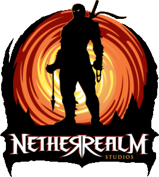